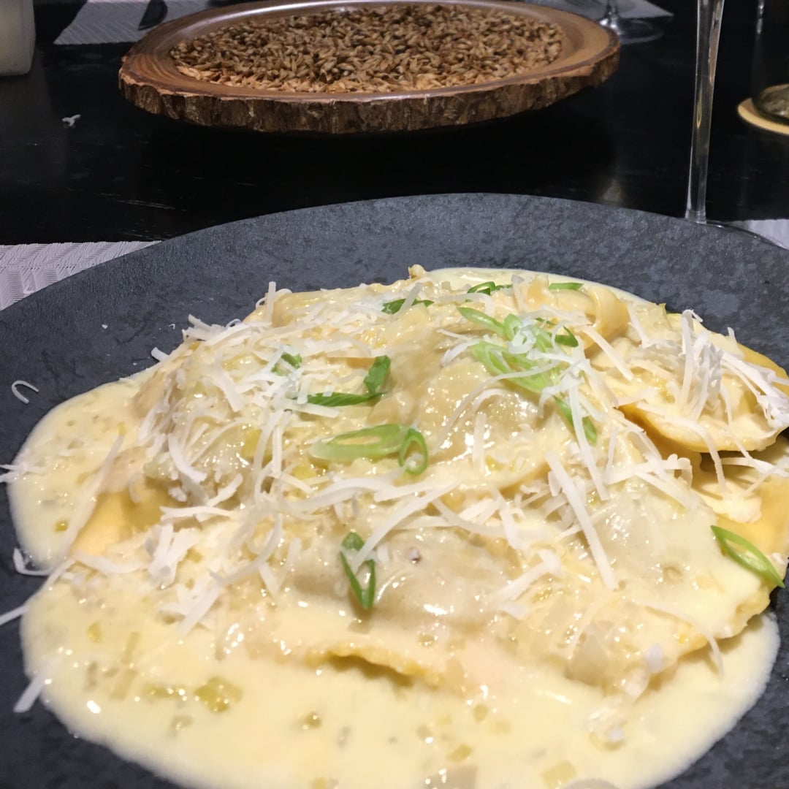

Tortei ao molho de nata

Ingredientes
- 1kg de Tortéi
- 2L Água com sal para cozinhar a massa
- 220g de nata
- 1 colher de chá de manteiga
- 1 pedaço de alho poró
- ⅓ cebola
- sal à gosto
- 1 colher de sopa de mostarda grãos
- 2 colher de sopa de mostarda de Dijon
Modo de Preparo
- Coloque a água para ferver, assim que ferver coloque o sal e em seguida o tortéi.
- Para o molho, corte a cebola e o alho poró e refogue em uma colher de manteiga.
- Adicione o sal, a mostarda em grãos e a mostarda Dijon, mexa bem.
- Adicione a nata e deixe derreter, quando começar a borbulhar nas bordas da frigideira pode desligar
o fogo.
- Retire os tortéis que estiverem boiando coloque numa travessa e depois coloque o molho por cima.
Delicie-se com essa massa maravilhosa.
Risoto de alho-poró
Ingredientes
- 2 colheres (sopa) de cebola picada
- 30 ml de vinho branco
- 3 xícaras (chá) de caldo de legumes quente
- 1 xícara (chá) de parmesão ralado
- Pimenta-do-reino a gosto
- 50 g de alho-poró em rodelas
- 1 colher (sopa) de azeite
- 1 xícara (chá) de arroz arbóreo
- 2 colheres (sopa) de manteiga gelada
- quanto baste de sal
- Manteiga para refogar
Modo de Preparo
- Refogue a cebola picada no azeite e manteiga.
- Quando estiver translúcida, acrescente o arroz arbóreo e refogue, para que os grãos possam absorver
toda a gordura.
- Acrescente o vinho branco e refogue mais um pouco.
- Despeje então, 1/3 do caldo reservado, abaixe o fogo e deixe cozinhar em panela sem tampa. Quando
estiver quase seco, acrescentar a metade do caldo restante.
- Mexa algumas vezes, para não pegar no fundo da panela.
- Acerte o sal e acrescente a pimenta-do-reino.
- Quando estiver quase seco novamente, acrescente o restante do caldo e mexa um pouco mais.
- Quando finalmente estiver quase seco novamente, retire a panela do fogo e do calor, acrescente a
manteiga gelada, o alho poró em rodelas e refogado em pouco de manteiga e azeite, e o parmesão
fresco.
- Mexa vigorosamente, tomando apenas o cuidado de não quebrar os grãos.
- Sirva imediatamente.
Molho de tomate

Ingredientes
- 2 kg de tomate maduro (débora ou italiano) cortado ao meio,sem semente
- 1 cebola pequena picada
- 1 pitada de cominho
- Sal à gosto
- 6 colheres (sopa) de azeite
- 2 dentes de alho amassados
- manjericão a gosto
Modo de Preparo
- Numa panela, coloque 2 kg de tomate maduro sem sementes e deixe até amolecer.
- Depois, passe pelo passador de legumes ou numa peneira.
- Leve ao fogo 6 colheres (sopa) de azeite e refogue 1 cebola pequena picada, 2 dentes de alho amassados.
- Junte o tomate processado e 1 pitada de cominho.
- Cozinhe por 15 min em fogo baixo.
- Acerte o sal e finalize com o manjericão a gosto.
Brusquetas de berinjela
Ingredientes
- 1 berinjela grande cortada em rodelas
- 100 gramas de queijo mussarela ralada
- 1 tomate grande picado em cubos pequenos
- 2 dentes de alho espremidos
- Sal, azeite, coentro, pimenta-do-reino e orégano a gosto
Modo de Preparo
- Reúna todos os ingredientes;
- Tempere toda berinjela, em ambos os lados, com o sal e a pimenta-do-reino;
- Depois de temperá-las, distribua-as em uma assadeira e leve ao forno a 200 °C por 20 minutos;
- Enquanto isso, coloque o tomate picado em uma vasilha e acrescente o alho, o coentro e o orégano;
- Coloque um pouco de azeite, acerte o sal e misture bem;
- Assim que passar os 20 minutos, retire a berinjela do forno e coloque um pouco do tomate por cima de cada rodela;
- Cubra com o queijo, polvilhe orégano e volte para o forno até o queijo derreter;
- Está pronto! Sirva e aproveite com sua família e amigos.